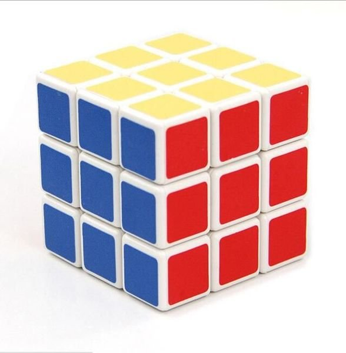
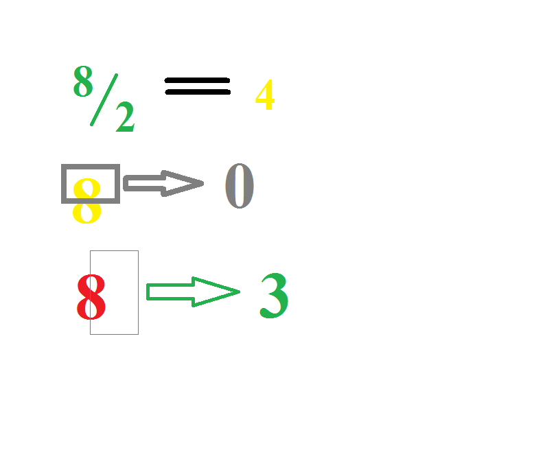

Rubik cuộc sống
Hôm nay theo lịch dọn dẹp lại vài thứ nơi bàn làm việc, chợt phát hiện ra khối rubik cũ ngày xưa. Cái ngày còn con nít lắm, thấy người ta chơi rubik mà cứ nằng nặc làm mọi cách để có được một cục y như vậy, rồi thì đã có được khối rubik tôi đem về mày mò cả mấy ngày quên hết mọi chuyện để rồi tìm ra được cách giải thì y như là lượm được vàng vậy, cứ hễ mỗi khi đi học lại lấy ra quay quay với các bạn trong lớp rồi mỗi lần giải được những thử thách các bạn đưa ra thì y như ta đây vĩ đại vậy. Nghĩ lại khoảng thời gian đó thật vui biết bao. Cơ mà khối rubik này không chỉ là những kỷ niệm của quá khứ, khối rubik này còn là vật đầu tiên mang đến cho tôi một cái nhìn khác hơn mọi chuyện trong cuộc sống này.
Như các bạn đã biết (những ai chưa biết thì tự nhìn hình hay tìm hiểu nhé) thì khối rubik đơn giản, thông dụng nhất là khối rubik lập phương sáu mặt mang sáu màu sắc khác nhau. Nếu chỉ để yên khối rubik trên bàn, bạn nhìn trực diện vào nó thì tôi tin rằng bạn chỉ thấy nhiều nhất là ba đến bốn mặt của khối rubik đó mà thôi, không thể nào bạn nhìn được hết sáu mặt của nó chỉ với việc bạn để nó trên mặt bàn như vậy.
Và đối với tôi, cuộc sống cũng tương tự vậy, mọi chuyện trong cuộc sống đều như một khối rubik lập phương đó vậy, luôn tồn tại những mặt khác nhau thay cho những cách đánh giá khác nhau của mọi người và kết quả cũng như sự đánh giá đó là của tùy mỗi người lựa chọn như việc bạn muốn nhìn thấy mặt nào của khối rubik vậy.
Cơ mà chúng ta lại chỉ thường xuyên nhìn vào chỉ duy một mặt của câu chuyện và cho nó là tất cả của cả câu chuyện cứ như kiểu chỉ nhìn thấy màu trắng trên một mặt của khối rubik và đánh giá toàn khối này chỉ toàn độc một màu trắng mà thôi, thực tế có phải chúng ta đã sai rồi đúng không? Tại sao vậy?
Dựa theo những gì đã kiểm nghiệm trên chính bản thân, tôi rút ra được là do hoàn cảnh mà một số vấn đề khi nhìn nhận nó tôi nhận được sự hỗ trợ nhiệt tình bởi một số yếu tố bản năng như: tính nóng nảy khi ai đó chọc tức tôi, cái tôi quá cao khi ai đó chỉ trích nói rằng tôi đã sai, tính nhút nhát trốn tránh khi tôi phạm một lỗi gì đó, tính ganh tị khi ai đó có điều gì đó hơn mình,…. tất cả những thứ đó tùy tình huống đổ vào suy nghĩ trong vài giây và khiến cho điều quan trọng nhất cản đi sự nhìn nhận của tôi đó là tư duy bị che khuất như kiểu bạn bị cận mà chiếc kính cận của bạn cũng đầy bụi trên đó và thế là kết quả bạn chẳng nhìn được đúng nhan sắc người khác giới đối diện như thế nào mà chỉ đưa đến kết quả xấu hoắc qua chiếc kính đó.
Nhớ lại những điều trên ở tôi một thời tôi nhận ra rằng yếu tố quyết định về cái tôi nhìn được ở một sự kiện, sự vật, sự việc đó là tư duy là tròng của chiếc kính cận kia, tuy nhiên tư duy như thế nào thì là mỗi người mỗi khác biệt cùng với đó là những sự hỗ trợ đúng lúc hay dư thừa của nhiều yếu tố bên trong mỗi người nữa, cho nên cùng một cái bàn mà nhiều lúc mỗi người có thể nhìn theo nhiều cách khác nhau. Vì lẽ đó nên đừng đánh giá một người vội vàng chỉ vì quan niệm của họ khác mình nhé! Phân nửa của 8 là 4 phân nửa của 8 cũng là 0 0 và phân nửa của 8 cũng là 3 3.
Cơ mà cứ nhìn mãi một mặt của sự việc hay chỉ duy trì nhìn thấy một màu của khối rubik thì mãi mãi bạn vẫn không biết được khối rubik là gì cũng như cuộc sống là như thế nào và thế là đừng nhắc đến chuyện bạn có thể phá giải hay tham gia việc chơi đùa cùng khối rubik này cũng như đừng nhắc đến chuyện bạn sẽ thành công trong cuộc sống hay đơn giản chỉ là tham gia vào công việc sống trong thế giới này. Thật đấy!
Thế, hãy thôi cái nhìn phiến diện và đánh giá vội vàng đó đi, cầm lấy khối rubik ấy lên và di chuyển nó đi để thấy được mặt sau, mặt bên, mặt trên, mặt dưới của nó để hiểu rằng nó đâu phải chỉ có một mặt trước thôi. Tương tự ngừng ngay việc chỉ nghĩ đến một mặt của câu chuyện mà đánh giá vội vàng rằng câu chuyện này hay, dở, hên, xuôi, đẹp hay xấu,…. hãy bình tâm lại hạn chế tối đa thậm chí loại bỏ những sự hỗ trợ dư thừa, suy nghĩ ở nhiều khía cạnh khác nhau của câu chuyện để rồi thoát ra khỏi chỉ mỗi cái nhìn bản thân mà bổ sung thêm cái nhìn của người khác không phải mình, có như thế thì bạn mới có được chiếc kín cận sáng nhất để nhìn rõ câu chuyện, nhìn rõ nhan sắc người đối diện.
“Nửa ly nước, nói đầy nửa ly cũng đúng, nói vơi nửa ly cũng đúng tùy vào cách bạn tư duy” một ý rất hay trong quyển Tư duy tích cực thay đổi cuộc sống mà tôi đã đọc qua. Ngày xưa, thuốc nổ được tạo ra với mục đích chính là khai thác khoáng sản là chính, cây dao được tạo ra mục đích cơ bản là cắt và là một công cụ không thể thiếu trong gian bếp, ở tù là một hình thức đào tạo lại con người thôi, giáo dục ngày xưa mục đích chính là đem lại tri thức cho học sinh, một người bị mọi người chỉ trích là một người được nhiều người quan tâm, một người hay bị nói xấu là do những người đó ganh tị với mình và có thể họ giúp mình trong việc khắc phục được nhược điểm của bản thân để ngày càng hoàn thiện, cha mẹ la con cái cái cốt là muốn chúng khôn lớn hơn thôi, đi nghĩa vụ là một hình thức rèn luyện được đào tạo bài bản thôi,…. và nhiều nhiều thứ khác sự việc sự vật khác nữa (Ví dụ trên cũng chỉ là một mặt mà tôi có thể nhìn được thêm thôi)
Ghi thì ít vậy đọc nghĩ thấy cũng khá đơn giản như việc ngừng chiên trứng trên chảo mà chiên trứng trong nồi ấy. Cơ mà chiên trứng trong nồi cũng đâu hẳn là đơn giản nhỉ (Chắc bữa nào nên thử một lần). Nói ra để có được một chiếc kính trong và sáng nhất bạn phải lau chùi nó mỗi ngày. Một người đeo kính chắc biết được việc để một chiếc kính quá lâu bên ngoài mà không lau chùi thường xuyên, bảo quản thì việc mua một chiếc kính mới là một chuyện hoàn toàn có thể. Tư duy cũng như thế đấy, nếu bạn chỉ cố gắng tư duy, nhìn về một sự việc, sự vật, câu chuyện nhiều khía cạnh khác nhau chỉ trong một ngày thì 364 ngày còn lại coi như là thời gian tồn tại của sinh mệnh chiếc kính đó vậy.
Luyện nó có khó không? Có người nói khá dễ có người nói khó như việc dời núi vậy! Nếu bạn nghĩ nó dễ thì bạn đã làm chưa? Nếu chưa thì tại sao việc dễ bạn lại không làm được? Nếu đã làm rồi thì cố gắng lên nhé giữ mãi việc đó hằng ngày nhé (Quan trọng không chỉ ở kết quả mà còn là quá trình, thời gian trong bao lâu). Nếu bạn nghĩ nó khó thì xin nhắc rằng một bài toán quá dễ thì ai làm cũng được và chẳng có gì để nói thêm về người có thể thực hiện nó cả, tuy nhiên bài toán càng khó thì người có thể làm cũng càng ít, chỉ khi đó công sức giải bài toán của bạn mới thật sự xứng đáng thành quả mới có thể cao được, đừng thấy nó khó mà nản. Không sợ núi cao chỉ sợ không leo lên thôi. Ngu công là người của thuở xưa bạn đừng để mình thua cả một người cao tuổi trong lịch sử nhé! ^^ À, một trong những việc làm có thể rèn luyện khả năng này tốt nhất là thiền, hãy tìm hiểu và thực hiện đi nào.
Mỗi ngày tôi chắc rằng không ít hơn 2 việc sẽ ập đến trên đầu bạn, hãy bình tâm lại với mọi việc ập đến và thử thực nghiệm đi nhé, cảm giác sẽ thú vị lắm đó. ^^
Cơ bản, tóm lại khối rubik chỉ có 6 mặt mà nếu chỉ nhìn phiến diện thì chẳng thể nào nhìn được toàn bộ mặt của nó huống chi cuộc sống luôn có ít nhất là hai mặt cho một sự vật sự việc. Bình tâm, loại bỏ những thứ dư thừa, nhìn nó theo những cách nhìn khách quan, bổ sung thêm những cách nhìn từ những người khác rồi hãy đánh giá về điều đó. Và nên nhớ mỗi người dù là anh em song sinh vẫn có thể nhìn khác nhau về nửa ly nước!
-- chúc các bạn sớm ngày phá giải được trò chơi cuộc sống --